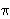
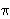
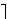

mi (mod pi).
Tada je m = mi
+ kpi), za neki cijeli broj k.
Tako dobivamo problem
mi (mod pi).
Tada je m = mi
+ kpi), za neki cijeli broj k.
Tako dobivamo problem
Opisat ćemo najprije Pohlig - Hellmanov algoritam redukcije kojim se određivanje broja m svodi na određivanje od m modulo svaki prosti faktor od n. Direktna posljedica postojanja ovog algoritma jest da ako želimo da kriptosustav zasnovan na ECDLP bude siguran, onda n mora imati veliki prosti faktor.
Pohlig - Hellmanov algoritam se može primijeniti u bilo kojoj abelovoj grupi G. Neka je red n od G djeljiv s prostim brojem p, te pretpostavimo da želimo riješiti problem diskretnog logaritma
Q = m P.
Problem se može reducirati na podgrupu od G reda p tako da se rješava problemQ' = n' Q = m0 (n' P) = m0 P',
gdje je n' = n / p i m
m0 (mod p). Stoga je P' točka reda
p. Rješenjem ovog novog problema određujemo vrijednost
m0, tj. određujemo m modulo p.
Vrijednosti od m modulo p2,
p3, ... , pc
(gdje je pc najveća potencija od p
koja dijeli n) određuju se na sljedeći način.
Pretpostavimo da je poznato da je m
mi (mod pi).
Tada je m = mi
+ kpi), za neki cijeli broj k.
Tako dobivamo problem
R = Q - mi P = k(pi P) = k S,
gdje su R i S poznati i S ima red s = n / pi. Vrijednost od k modulo p određuje se na isti način kao što je gore određena vrijednost od m modulo p.Nastavljajući ovaj postupak, rješavanjem problema diskretnog logaritma u podgrupama reda p, mi na kraju određujemo vrijednost m modulo pc. Nakon što izračunamo ovu vrijednost za sve proste djelitelje od m, sam broj m, tj. rješenje originalnog problema diskretnog logaritma, nalazimo primjenom Kineskog teorema o ostatcima.
Primjer: Neka je dana eliptička krivulja
E : y2 = x3 + 71x + 602
nad poljem 1009.
Red grupe E(1009)
je 1060 = 22
1009.
Red grupe E(1009)
je 1060 = 22  5 53.
Zadane su točke P = (1, 237), Q = (190, 271).
Treba riješiti problem eliptičkog diskretnog logaritma
Q = [m] P.
5 53.
Zadane su točke P = (1, 237), Q = (190, 271).
Treba riješiti problem eliptičkog diskretnog logaritma
Q = [m] P.
Točka P ima red 530 = 2
5 53
u grupi 1009.
Dakle, kod nas je n = 530 i pomoću Pohlig-Hellmanovog
algoritma računanje broja m se reducira na računanje
od m modulo 2, 5 i 53.
Modulo 2: Množeći točke P i Q s 530/2 = 265, dobivamo točke P2 = [265] P = (50, 0) i Q2 = [265] Q = (50, 0). Dobivamo problem
Q2 = (m mod 2) P2,
otkud očito slijedi da je m 1 (mod 2).
Modulo 5: Množeći točke P i Q s
530/5 = 106, dobivamo točke P5 = [106] P
= (639, 160) i Q5 = [106] Q = (639, 849).
Očito je Q5 = -P5,
što povlači m
-1
4 (mod 5).
Modulo 53: Sada se točke množe s 530/53 = 10. Tako se dobivaju točke P53 = [10] P = (32, 737) i Q53 = [10] Q = (592, 97). Dobili smo problem diskretnog logaritma u grupi reda 53, koji ćemo riješiti malo kasnije kao ilustraciju BSGS metode.
Poznato je nekoliko metoda za rješavanje ECDLP koje imaju
kompleksnost
O( n).
Danas se najboljim smatra Pollardova
-metoda,
kod koje je za određivanje diskretmog logaritma potrebno
(n)/2 zbrajanja
točaka na eliptičkoj krivulji. Mi ćemo ovdje opisati tzv.
baby step / giant step (BSGS) metodu čiji je autor
Daniel Shanks. Ova metoda je primjenjiva
na problem diskretnog logaritma u proizvoljnoj abelovoj grupi
G. Njezina kompleksnost je također
O(n),
gdje je n red grupe G, a pripadna konstanta je čak
i nešto bolja nego kod -metode. No, za razliku od
-metode,
BSGS metoda zahtjeva i pohranjivanje u memoriju
O(n)
elemenata grupe.
n).
Danas se najboljim smatra Pollardova
-metoda,
kod koje je za određivanje diskretmog logaritma potrebno
(n)/2 zbrajanja
točaka na eliptičkoj krivulji. Mi ćemo ovdje opisati tzv.
baby step / giant step (BSGS) metodu čiji je autor
Daniel Shanks. Ova metoda je primjenjiva
na problem diskretnog logaritma u proizvoljnoj abelovoj grupi
G. Njezina kompleksnost je također
O(n),
gdje je n red grupe G, a pripadna konstanta je čak
i nešto bolja nego kod -metode. No, za razliku od
-metode,
BSGS metoda zahtjeva i pohranjivanje u memoriju
O(n)
elemenata grupe.
Slijedi opis BSGS metode. Neka su P, Q elementi grupe G, te neka je Q = m P. Po teoremu o dijeljenju s ostatkom, znamo da se m može zapisati u obliku
m = n
a + b, gdje je 0
 a, b <
n.
a, b <
n.
(Q - b P) = a (n
P).
Najprije izračunamo tablicu "baby stepova". Ta se tablica sastoji od svih vrijednosti
Rb = Q - b P,
za b = 0, 1, ... ,
n - 1.
Nakon toga računamo redom "giant stepove":
Sa = a (n
P). ,
za a = 0, 1, ... ,
n - 1.
n.
Nastavak primjera: U gornjem primjeru, promatrali smo eliptičku krivulju
E : y2 = x3 + 71x + 602
nad1009.
Nakon primjene Pohlig-Hellmanovog algoritma, originalni problem
smo sveli na određivanje broja m0 za kojeg vrijedi
Q' = [m0] P', gdje je
Q' = (592,97), P' = (32,737).
Znamo da je red od P' jednak 53. Kako je53
= 8, trebamo napraviti osam "baby stepova". Dobivamo sljedeću
tablicu
| b | Rb = Q' - [b] P' |
| 0 | (592, 97) |
| 1 | (728, 450) |
| 2 | (537, 344) |
| 3 | (996, 154) |
| 4 | (817, 136) |
| 5 | (365, 715) |
| 6 | (627, 606) |
| 7 | (150, 413) |
Sada računamo "giant stepove":
| a | [a] ([8] P') |
| 1 | (996, 855) |
| 2 | (200, 652) |
| 3 | (378, 304) |
| 4 | (609, 357) |
| 5 | (304, 583) |
| 6 | (592, 97) |
Primjećujemo poklapanje za a = 6 i b = 0, što povlači m0 = 8a + b = 48. (Već iz a = 1 smo mogli zaključiti da je S1 = - R3, otkud je [8] P' = -Q + [3] P', što ponovo povlači da je m = -5 = 48 (mod 53).)
Vratimo li se sada na originalni problem Q = [m] P, za P = (1, 237), Q = (190, 271), dobivamo sustav kongruencija
m 1 (mod 2),
m 4 (mod 5),
m 48 (mod 53),
Napomenimo da za eliptičke krivulje specijalnih oblika postoje
i efikasniji algoritmi za ECDLP od gore navedenih.
Neke od tih algoritama ćemo spomenuti u idućem poglavlju.
Poznavanje tih algoritama je važno jer nam oni pokazuju
koje eliptičke krivulje trebamo izbjegavati u kriptografskim
primjenama.
41*.
E : y2 = x3 + 71x + 602
nad poljem1009 riješite problem diskretnog
logaritma Q = [m] P, gdje je
P = (32, 737), Q = (699, 888).
| Web stranica seminara | Andrej Dujella - osobna stranica |